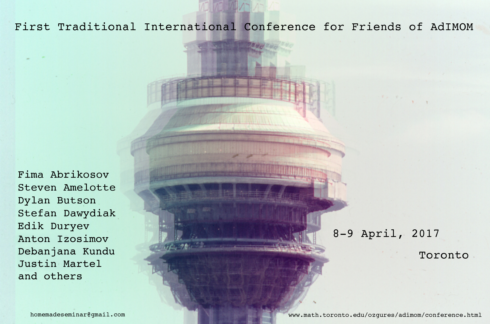

AdIMOM
Adequate Institute of Mediocre and Outstanding Mathematics
About us |
Past Seminars |
Conference

On April 8-9, ten to fifteen of us gathered in our house in Toronto for the First Traditional International Conference for Friends of AdIMOM. And we spent the weekend talking about mathematics (both mediocre and outstanding).
Invited Speakers
- Fima Abrikosov, (Yale University)
- Steven Amelotte, (University of Toronto)
- Dylan Butson, (Perimeter Institute)
- Stefan Dawydiak, (University of Toronto)
- Eduard Duryev, (Harvard University)
- Anton Izosimov, (University of Toronto)
- Debanjana Kundu, (University of Toronto)
- Justin Martel, (University of Toronto)
Schedule
| Friday |
|
| 20:00 |
Dinner |
| Saturday |
|
| 9:00-9:50 |
Breakfast and Registration |
| 10:00-11:20 |
Edik Duryev (abstract) |
| 11:20-11:40 |
Tea Break |
| 11:40-13:00 |
Steven Amelotte (abstract) |
| 13:00-15:00 |
Lunch |
| 15:00-16:20 |
Justin Martel (abstract) |
| 16:20-16:40 |
Tea Break |
| 16:40-18:00 |
Anton Izosimov (abstract) |
| 18:00-19:00 |
Discussions and rest (or excursion to LCBO) |
| 19:00-21:00 |
Dinner |
| 21:00-23:00 |
Silent movie accompanied by live music. |
| 23:00-00:00 |
Teeth brush break |
| 00:00 |
Bed time |
| Sunday |
|
| 9:00-10:20 |
Breakfast |
| 10:30-11:50 |
Fima Abrikosov (abstract) |
| 11:50-12:10 |
Tea Break |
| 12:10-13:30 |
Dylan Butson (abstract) |
| 13:30-15:00 |
Lunch |
| 15:00-16:20 |
Stefan Dawydiak (abstract) |
| 16:20-16:40 |
Tea Break |
| 16:40-18:00 |
Debanjana Kundu (abstract) |
| 18:00-19:00 |
Discussions and rest (or excursion to LCBO) |
| 19:00-21:00 |
Dinner |
-----
Abstracts
Speaker: Eduard Duryev
Date: April 8, 2017
Title: Dilation surfaces: dynamics and their moduli space
Abstract: Taking any polygon in the plane with pairs of parallel sides and gluing them via homotheties and translations one obtains a dilation surface. More generally, dilation structure is a structure with complex charts and transition functions given by homotheties and translations. We study such structures on surfaces of genus g. Does every such structure come from a polygon construction above? How do they compare to their closest relatives - translation surfaces? I will give examples of dilation surfaces and their main properties, also I will exhibit similarities and significant differences from the case of translation structures.
-----
Speaker: Steven Amelotte
Date: April 8, 2017
Title: Cohomology operations and symplectic structures on nilmanifolds
Abstract: Nilmanifolds represent a large class of interesting spaces which are conveniently studied through the lens of rational homotopy theory. I'll discuss some cohomology operations which were introduced to attack the longstanding toral rank conjecture for these manifolds and explain how they can detect symplectic/contact structures. Time permitting, I'll show you a simple proof that the only nilmanifolds admitting a Kahler structure are tori and discuss some generalizations and analogues of this result in the contact setting.
-----
Speaker: Justin Martel
Date: April 8, 2017
Title: Voronoi revived: EVERYTHING is LINEAR.
Abstract: We propose that algebraic-topology of a complete nonpositively curved
metric space with boundary (Y, dY) is most economically displayed in the
singularity structures {Z_*} of COST-optimal recombination measures on the
product Y x dY, where COST is interpreted from electron-principles,
principal-curvatures, and to be illustrated.
We apply the principle ``Soul is Singularity" to our favourite matrix
groups, describe how Kantorovich duality linearizes everything, and
describe the cohomological consequences.
-----
Speaker: Anton Izosimov
Date: April 8, 2017
Title: Combinatorics of matrix polynomials
Abstract: Consider a polynomial in one variable with matrix coefficients. Then its characteristic equation defines a plane curve, known as the spectral curve. The points of this curve can be thought of as eigenvalues of the initial polynomial. Since to each eigenvalue one can associate the corresponding eigenspace (which is generically one-dimensional), the spectral curve comes equipped with a line bundle. This gives a, roughly speaking, one-to-one correspondence between matrix polynomials and pairs (plane curve, line bundle over that curve). However, this does not quite work when the spectral curve fails to be irreducible. In the latter case the corresponding variety of matrix polynomials is reducible as well. I will discuss combinatorics of such matrix polynomials. I will present some simple examples somewhat related to representation theory of gl(n). Then I will explain where general results come from and pose some open questions.
-----
Speaker: Fima Abrikosov
Date: April 9, 2017
Title: Primer on Stability Conditions
Abstract: TBA
-----
Speaker: Dylan Butson
Date: April 9, 2017
Title: Derived Geometry, Factorization Algebras, and Quantum Field Theory
Abstract: TBA
-----
Speaker: Stefan Dawydiak
Date: April 9, 2017
Title: Matrix coefficients of admissible representations of real groups
Abstract: We will give an introduction to the admissible representations of (a nice
class of) real Lie groups, and the asymptotics of their matrix
coefficients. These are functions generalizing the matrix entries of a
finite-dimensional, and they turn out to be real-analytic functions on $G$
with interesting asymptotic expansions. To talk about them, we'll develop
enough of the theory to talk about parabolic induction and the $C^\infty$
vectors of an admissible representations. All of the above words will be
defined, after recalling the results we'll need about compact groups. Time
permitting, we'll discuss applications of model theory to studying matrix
coefficients, which is joint work with Julia Gordon.
-----
Speaker: Debanjana Kundu
Date: April 9, 2017
Title: An application of the Selberg Trace Formula for GL(2)
Abstract: TBA